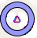
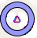
Todas las velocidades están, por defecto, en nudos, las distancias en millas náuticas y la altitud en pies. Estas unidades
pueden cambiarse a imperial o métrico en el cuadro de diálogo Opciones en la pestaña Unidades.
Colores, tamaño y etiquetas de texto de algunos elementos del mapa pueden cambiarse en el cuadro de diálogo Opciones pestaña
Mostrar mapa. Esta leyenda muestra valores por defecto.
Rumbo y curso están sufijos con °T el curso verdadero o °M para curso magnético.
| Símbolo | Descripción |
|---|---|
| Centro de la posición inicial. | |
| 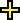 | Centrar el punto que será usado para búsqueda de distancias. |
| 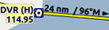 | Plan de vuelo con distancia, dirección y curso magnético para cada tramo. |
| 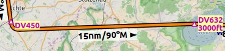 | Procedimiento Plan de Vuelo con la misma información de arriba. |
| 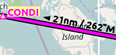 | Tramo Activo Plan de vuelo |
| 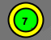 | Posición de Partida en aeropuerto del Plan de Vuelo. Ya sea estacionamiento, Surtidor de combustible, Helipuerto, Puerto de agua o Pista. |
| 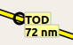 | Tope de descenso con distancia al punto de destino. |
|
|
Anillos de Rango etiquetados con distancia. |
|
|
Anillos de rango etiquetados VOR o NDB con identificador y frecuencia. Colores indican tipo de Navaid. |
| 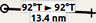 | Gran círculo linea de medición de distancia y curso indican largo y rumbo verdadero de partida y destino. Los dos valores de rumbo deben ser iguales para distancias pequeñas. Para distancias cortas también pueden mostrarse en pies o metros. |
| 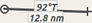 | Línea Loxodrómica de igual medida a distancia de rodado indica la distancia y el rumbo verdadero. Las líneas Loxodrómicas son usadas para aproximarse a un VOR o NDB en un trayecto de aerovías. Para distancias cortas, la longitud es mostrada también en pies. |
| 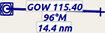 | Las líneas de medición comienzan desde un aeropuerto o navaid que tienen el mismo color y etiqueta de identificación y frecuencias adicionales. Curso para líneas Loxodrómicas pueden mostrarse como magnéticas si la navaid es magnética o como atributo de variación. |
| Un aeropuerto o navaid resaltado seleccionado en el resultado de la tabla de búsqueda. | |
|
|
Un aeropuerto o navaid resaltado en la tabla del Plan de Vuelo. |
|
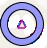
|
Posiciones resaltadas de un procedimiento de tramo en la vista previa. Pequeño círculo desde y Gran círculo hasta la posición. |
| 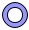 | Círculo fino muestra procedimiento o navaid recomendado para el tramo. Puede ser VORDME para un tramo de arco DME de aproximación por ejemplo. |
El espesor de la línea puede cambiarse desde el diálogo Opciones en la pestaña Mostrar Mapa.
| Símbolo | Descripción |
|---|---|
| 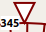 | Norte verdadero. |
| 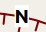 | Norte Magnético. |
| 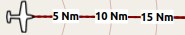 | Círculos de distancia y marcas desde aeronave del usuario conectada al simulador. |
| 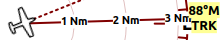 | Línea sólida muestra rastro de la aeronave en grados magnéticos si está conectada. |
| 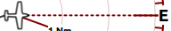 | Líneas en trazos muestran rumbo si está conectado. |
| Símbolo | Descripción |
|---|---|
Vehículo actual del usuario si está conectado al simulador. Etiquetas varían y pueden ser personalizadas en
Opciones en la pestaña Mostrar Mapa. La aeronave del usuario depende de la que
haya elegido (jet, pistón/turbopropulsado o helicóptero). Opcionalmente, una aguja negra partiendo de la nariz del avión
en el trazo actual.
|
|
| Aeronave del usuario en tierra. | |
| 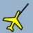 | La aguja muestra el rastro actual de la aeronave, la nariz muestra el rumbo. |

|
Rastro de la aeronave si está conectada al simulador de vuelo. |

|
Viento alrededor de la aeronave del usuario, con dirección en grados magnéticos y velocidad. |
|
|
Aeronaves de IA o Multijugador. Pueden personalizarse las etiquetas en Opciones en la pestaña Mostrar
Mapa. El símbolo depende del tipo de elegido por el usuario (jet, pistón/turbopropulsado, helicóptero o nave).
|
| 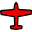 | Red aeronave/cliente en línea. Etiquetas pueden variar y ser personalizadas como arriba. |
Los aeropuertos tienen torres de control mostradas en azul oscuro y otras en magenta. Aeropuertos con nombres agregados e identificadores son mostrados en itálicas y subrayados. Aeropuertos que son parte del Plan de Vuelo tienen un fondo amarillo claro.
El símbolo es mostrado pequeño si el aeropuerto no tiene pista. Este es el caso de algunos agregados de aeropuertos que usen otra técnica como escenarios fotorrealistas para mostrar las pistas.
| Símbolo | Descripción |
|---|---|
 
|
Aeropuertos con superficie dura y pistas mayores a 8.000 pies o 2.400 metros. Todas las pistas mayores a 4.000 pies o cerca de 1.200 metros serán mostradas. Solo para distancias de ampliación bajas. |

|
Aeropuertos con superficie dura. Líneas blancas muestran cabecera de pistas más largas. |
 
|
Aeropuertos con superficies blandas. |

|
Aeropuertos vacíos son mostrados en color gris. Sin líneas de taxi, estacionamiento, aprons...etc. |
 
|
Base para Hidroavión solamente con pista de agua. |
 
|
Aeropuerto Militar. |
| Helipuerto que solo tiene helipad y no tiene pista. | |
 
|
Aeropuerto abandonado. Todas las pistas están cerradas. |
 
|
Aeropuertos que tienen combustible disponible. |
| 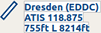 |
Etiqueta de Aeropuerto mostrando nombre, identificación, frecuencia ATIS, elevación, pistas iluminadas (L) y longitud
de la pista más larga. Las etiquetas de texto para un aeropuerto pueden cambiarse en el diálogo Opciones en la
pestaña Mostrar Mapa.
|
Navaids que son parte del Plan de Vuelo tienen un fondo de texto color amarillo claro.
| Símbolo | Descripción |
|---|---|
 
|
VOR DME incluyendo tipo de ident, (Alto, Bajo o Terminal) y frecuencia. La Rosa Compás muestra la variación magnética en distancias con ampliaciones bajas. |
 
|
VOR incluyendo ident, tipo y frecuencia. |

|
DME incluyendo ident, tipo y frecuencia. |
| 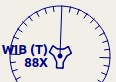 | TACAN incluyendo tipo (Alto, Bajo o Terminal) y canal. Rosa Compás muestra variación magnética en distancias con ampliaciones bajas. |
| 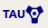 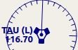 | VORTAC incluyendo tipo (Alto, Bajo o Terminal) y canal. Rosa Compás muestra variación magnética en distancias con ampliaciones bajas. |
 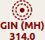 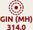
|
NDB incluyendo ident, tipo (HH H, MH o CL - compás de ubicador) y frecuencia. |

|
Waypoint con nombre. |
| 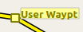 | Punto con su nombre definido por el usuario. |

|
Aeropuerto no válido, waypoint VOR o NDB que es parte del Plan de Vuelo pero no se encuentra en la base de datos del escenario. |
 
|
Marcador con tipo y rumbo indicados por la silueta del lente. |
| 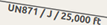 | Aerovía con nombre, tipo (Jet o Ambas), altitudes mínima y máxima. Texto depende del nivel de ampliación y distancia. Precedida por una flecha muestra la dirección si es aerovía de un solo sentido. |
| 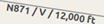 | Aerovía Victor con etiqueta mostrando el nombre, tipo (Victor o Ambas), altitud mínima y máxima. Texto depende de distancia de ampliación. Precedida por una flecha muestra la dirección si es aerovía de un solo sentido. |
| 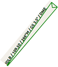 | ILS con glideslope. Etiqueta muestra ident, frecuencia, rumbo magnético, ajuste de glidescope e indicación DME si está disponible. |
| 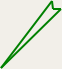 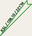 | Localizador. Etiqueta muestra ident, frecuencia, rumbo magnético e indicación DMI si está disponible. |
Ver el capítulo de Procedimientos en el manual para información más detallada en todos los tramos.
| Símbolo | Descripción |
|---|---|
| 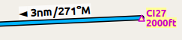 | Vista previa de tramo de aproximación o transición SID, STAR, en vista previa con distancia, dirección y curso magnético de cada tramo. |
| 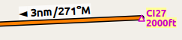 | Aproximación o transición de tramo SID, STAR, que es parte del Plan de Vuelo. |
| 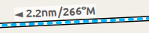 | Aproximación errada en vista previa del tramo. |
| 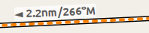 | Vista previa del Tramo de Aproximación errada que es parte del Plan de Vuelo. |
| 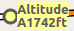 | Círculo relleno de color gris o amarillo que indican un punto de procedimiento que no está definido en navaid por curso y/o distancia desde una navaid, una restricción de altitud o terminación manual. |
| 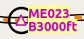 | Un círculo negro indica un waypoint a sobrevolar. Puede ser un punto de procedimiento o una navaid. |
| 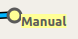 | Volar un rumbo, ruta o mantener mientras se termina manualmente por ATC. |
| 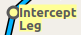 | Interceptar el próximo tramo de aproximación en un curso alrededor de 45 grados. |
| 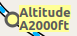 | Tramo de procedimiento que es terminado cuando se alcanza la altitud determinada. |
| 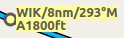 | El fijo que es definido por un curso, rumbo o distancia a una navaid. |

|
El fijo es definido por el rumbo o trazo que es terminado al alcanzar la distancia DME. |
| 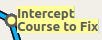 | Interceptar un curso fijo al próximo ángulo de alrededor de 45 grados. |
Los colores de pista, estacionamiento, helipuerto y aprons indican el tipo de superficie. Blanco es usado para una superficie desconocida o inválida creada por otro desarrollador.
| Símbolo | Descripción |
|---|---|
| 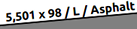 |
Pista con indicador de luces, largo, ancho (L) y tipo de superficie.
|

|
Final de pista con ident y rumbo magnético. |
| 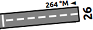 | Umbral desplazado. No usar para aterrizajes. |

|
Área de sobrecarrera. No usar para taxi, despegue o aterrizaje. |

|
Área de Blast pad. No usar para taxi, despegue o aterrizaje. |
| 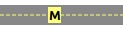 | Vía de Taxi con nombre y línea central. |

|
Vía de Taxi cerrada. |

|
Aprons con punteado semi transparente y vía de taxi indican que no hay superficie dibujada. Esto puede ser por escenario fotorealista o simplemente el fondo por defecto. |
 
|
Torre. Rojo si está con frecuencias disponibles. De otra forma, solo es su posición. |
| Combustible | |

|
GA rampa con número de estacionamiento y marca fina de cabecera. |
 
|
Puerta con número y marca fina de cabecera. Segundo anillo indica disponibilidad para Jet. |

|
Rampa de carga |

|
Estacionamiento Militar de combate o Rampa de carga. |
 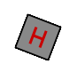 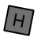 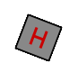 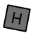
|
Helipuerto: Rojo indica que es un helipuerto médico. El color indica tipo de superficie. |
| Símbolo | Descripción |
|---|---|
 
|
Tierra con elevación de partida a la izquierda y elevación de aeropuerto de destino a la derecha. |

|
Altitud del Plan de Vuelo. |
| 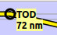 | Tope de descenso con distancia a destino. |

|
Altitud mínima segura para el Plan de Vuelo. Esta altitud más 1000 pies redondeados a los próximos 500ft superiores.
Los 1000 pies de regulación pueden cambiarse en el diálogo Opciones en la pestaña Plan de Vuelo
|

|
Mínima altitud de seguridad para un segmento del Plan de Vuelo. Las mismas reglas aplican como ser el la mínima altitud para el Plan de Vuelo. |
| 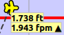 | Aeronave del usuario conectada al simulador. Etiquetas muestran altitud y tasa de ascenso/descenso actuales. |

|
Trazo de la Aeronave de usuario conectada al simulador. |